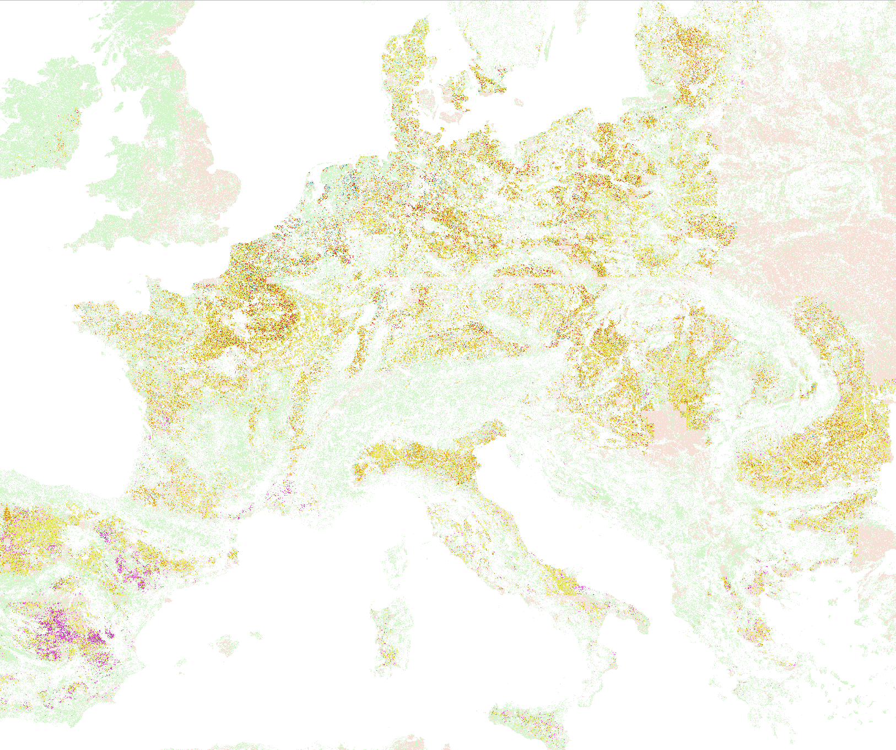
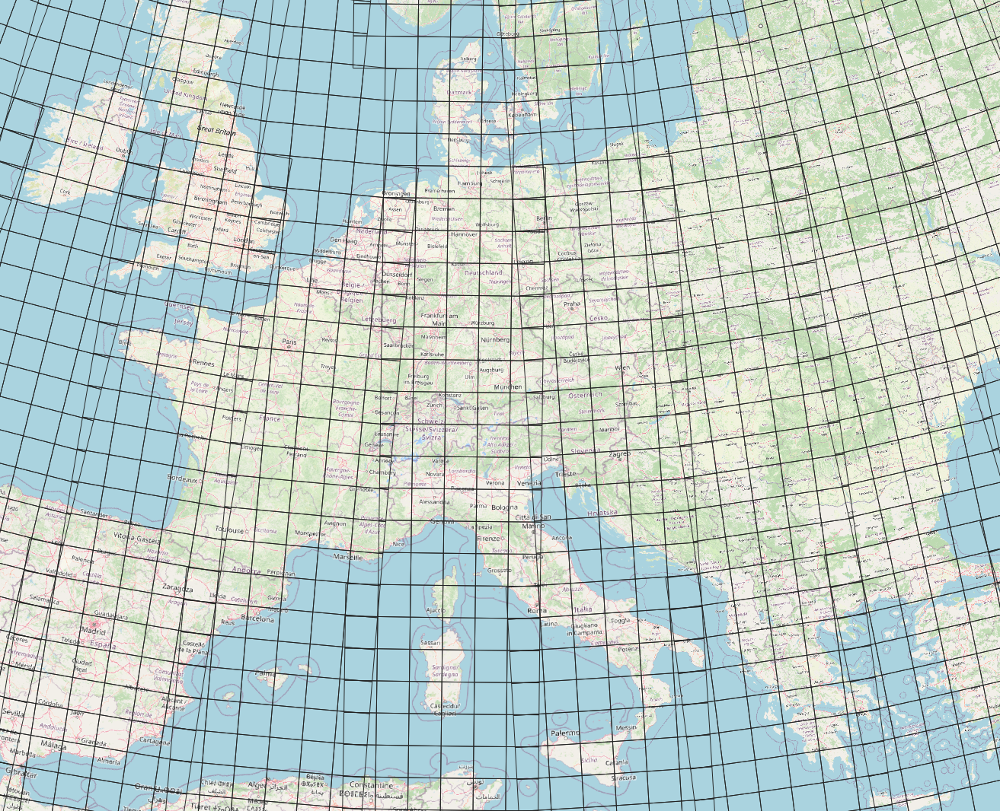
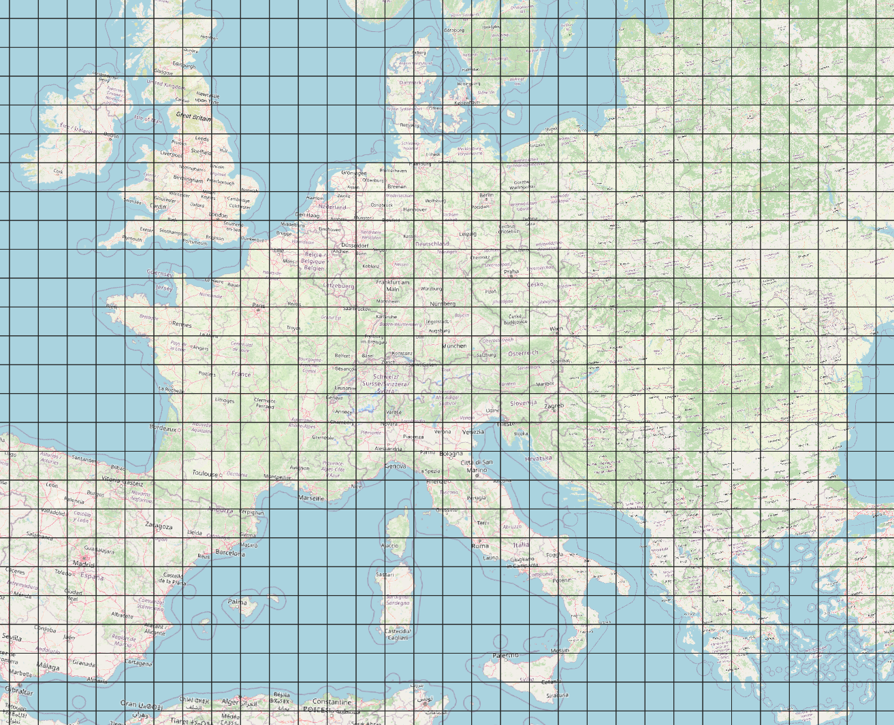
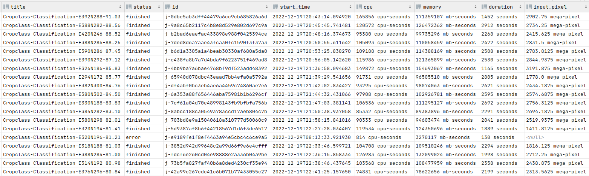

Large scale processing
Processing larger areas, especially globally, presents significant challenges in earth observation. Nonetheless, this platform aims to address these challenges. In this context, we highlight one of the best practices by showcasing the example of processing a croptype map for all 27 countries in the European Union. We encourage users to contact the forum with their issues connected to a specific case.

The approach described here relies on local files to track production, offering a low-cost solution. However, this method comes with risks, such as the potential loss of local files. A more robust approach for production-grade projects would typically use a database or STAC catalogue service to monitor processing. However, the setup is quite similar in many aspects.
The basic strategy for processing large areas involves splitting them into smaller sections, usually according to a regular tile grid. This division reduces the area size that needs to be processed in one batch job and avoids various limitations. For example, when processing within a specific projection, it is necessary to stay within the bounds of that projection. Additionally, the output file size of a job can become impractical when dealing with large areas. Bottlenecks that do not occur with smaller jobs may also arise in the backend implementation. Also, the cost will be smaller when a smaller job fails or requires reprocessing.
Relevant openEO features
We want to highlight a few key elements that made us choose openEO for large-scale processing:
- Performance & scalability
- STAC metadata is automatically generated for you, ensuring that your output is ready for dissemination without requiring you to become a metadata expert.
- Where relevant FAIR principles are taken into account automatically, such as providing provenance information.
- Cloud-optimized file formats are generated by default.
- Processing can be distributed over multiple backends.
Preparation
The concept involves generating a list of tiles to be produced and persistently storing it, along with all the necessary attributes for each tile. This approach offers a comprehensive visual overview of the processing that will take place.
Having job parameters in a file is also beneficial for debugging afterwards. If parameters are determined at runtime, there is no absolute certainty over the value of a specific argument due to potential bugs in the code.
Prepare tiling grid
The choice of the tiling grid depends on the users preferred projection system, which is determined by the area of interest. For Europe, users can opt for the EPSG:3035 projection. In contrast, using different projections per UTM zone may be preferable for global processing.
The size of tiles in the grid is also crucial and typically ranges from 20km to 100km. A 100km grid can suffice for relatively light workflows, whereas a 20km grid is more suitable for demanding cases. We opted for 20km tiles in our example because the workflow was particularly demanding. A smaller tile size can also minimize unnecessary processing, especially for irregular target areas like most countries and continents.
A couple of basic grids can be found here: https://artifactory.vgt.vito.be/ui/repos/tree/General/auxdata-public/grids
The images below illustrate the overlap in the UTM grids versus a regular LAEA grid.
| UTM 100km | LAEA 100km |
|---|---|
|  |  |
A grid can be masked based on the countries the user want to load; the following script shows an example:
import geopandas as gpd
europe = gpd.read_file(gpd.datasets.get_path("naturalearth_lowres"))
europe = europe[europe.continent=="Europe"]
df = gpd.read_file("https://artifactory.vgt.vito.be/auxdata-public/grids/LAEA-20km.gpkg",mask=europe)Prepare job attributes
In addition to defining the tiling grid, it is advisable to pre-determine other essential properties required for processing jobs. This approach allows for a comprehensive review of these properties before initiating processing. Examples include fundamental elements like job titles or tile-specific processing parameters, as well as attributes necessary to establish the processing sequence.
During this phase, users may also need to establish the precise tile extents within the coordinate system of their chosen tile grid. Providing accurate coordinates in the correct projection ensures precise alignment of tiles at the pixel level.
Tuning your processing job
Before starting large-scale processing, users should verify that the correct output is generated and that they have sufficient credits and resources to complete their jobs. This can be achieved by running test jobs and analyzing the statistics reported in the metadata to determine average parameters. (Refer to the map production section below for guidance on collecting these parameters in a CSV format.)
For example, when processing the EU27 croptype map, consisting of ~11000 20km tiles, we conducted the following upfront calculations:
- The average runtime per job was 30 minutes, indicating it would require approximately 15 days of continuous processing with 15 parallel jobs.
- The average cost per job was below 100 credits, ensuring we could feasibly process within a budget of 1,100,000 credits.
We had to optimize batch job settings and streamline the overall workflow to achieve these performance metrics.
A common challenge in parallelization is managing memory consumption, especially understanding the maximum memory allocation per machine in the chosen backend environment. For example, in a cloud setup where each machine has 16GB RAM and 4 CPUs, efficient usage would involve allocating less than 4GB per worker. This configuration allows four parallel workers to be fitted on a single VM. Conversely, requiring 6GB per worker would accommodate only two workers per VM, leaving approximately 4GB unused.
In our case, we utilized the openEO backend hosted on the Copernicus Data Space Ecosystem, built on Geotrellis. Detailed execution options and configurations are documented here.
Starting map production
The openEO Python client offers a powerful tool for executing multiple processing jobs across various backends.
It operates by taking a GeoJSON file corresponding to the tile grid and includes job properties for each tile. Whenever a new job needs to be created, it triggers a function provided by the user. Configuration options include setting up multiple backends and specifying the number of parallel jobs per backend.
Moreover, the tool handles error management seamlessly, making it more resilient than manually implementing a loop.
This script utilizes a CSV file to track jobs, enabling it to resume operations from the exact point of interruption. This capability enhances its tolerance to failures during processing.

Errors during production
Its common for some tasks to encounter issues during production, which is generally acceptable if it happens occasionally. If a task fails, it is recommended to check the error logs. A simple retry might solve the problem if theres no obvious reason for the failure. However, if the issue persists, its advisable to contact the forum.